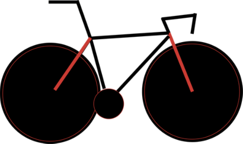

Cycle Philly is a smartphone app for recording your bicycle trips. When you use the app, you are giving transportation planners with the City of Philadelphia the data they need to make Philly a better place to ride.

Cycle Philly was developed by Code for Philly, an open group of citizens, working to harness the power of technology to modernize citizenship in Philadelphia.
Data collected by the app will be used by planners in the City of Philadelphia and the Delaware Valley Regional Planning Commission to build better bike routes.
The Cycle Philly Interactive map allows you to compare your routes to fellow cyclists.